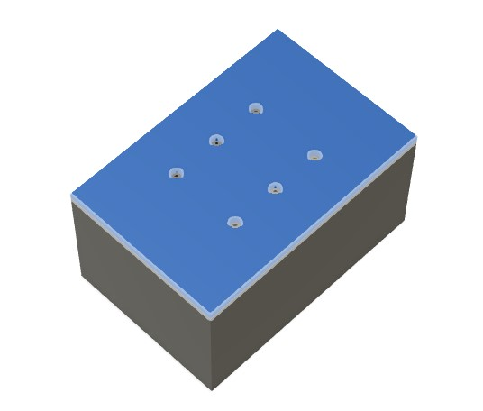
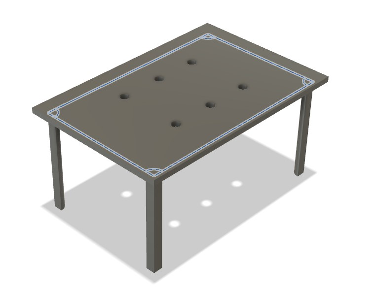
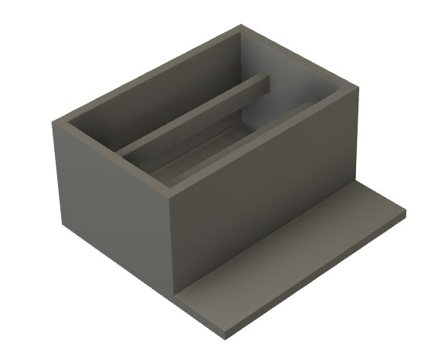
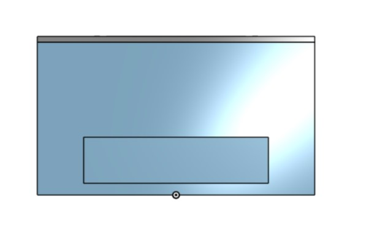

BrailleBox - Conrad Spirit of Innovation Challenge
Overview
I want to create a 3x2 solenoid array that can display braille characters by pushing solenoids up and down to create dots. This solenoid array will be connected to a Raspberry Pi, which in turn will be connected to an ESP32CAM. The camera will take a picture of a page of text, then perform OCR (optical character recognition) to extract a string of text from the image. That string of text will be converted to braille, which will be displayed on the solenoid array by flashing each character for 1 second at a time. This device will essentially allow for live-time conversion of any text into braille, which I hope will increase accessibility to books and the like.
Brainstorming Process
Initial Thoughts
My idea was to design a text to braille converter, which a blind person could use by moving the device over a page of text to convert it into braille. The braille translation of the English text would then be represented via a series of up/down pins which the user could use to interpret the information. The device was to be a rectangular box that would use an internal camera to interpret and OCR text, which could then be translated into braille and displayed via a series of servo motors pushing up metal rods on the top of the box. The pins would be in groups of six, each group representing a single braille character.
However, I talked to Stuart Christhilf who had thought of a similar mechanism for his initial final project. He originally planned to create a dynamic clock to display the time using blocks of wood that acould be pushed out or pulled back via servos. However, when building his project, he realized that fitting so many servos into such a small space was completely unfeasible and warned me from doing the same. My initial design is shown in the following image:

I then decided to use electromagnets for my pins, instead of a servo. The pins themselves would be a small magnetic rod sitting on top of an electromagnet. The small electromagnet could be powered on and off via a microcontroller. When the electromagnet was off, the pin would simply rest on top of the electromagnet, and the pin would be flush against the top of the board, forming the down position of the pin. If the pin needed to pop up, the microcontroller would power the electromagnet which would then emit a repelling magnetic charge. That magnetic force would then repel the pin slightly upwards, forming the up position of the pin. To represent a braille character, the microcontroller would push the specific pins into the up position that together would form the 6-dot pattern of the character.
I also decided to move the camera out of the box. That would allow for more simple wiring and internal organization of the box, and allow the operator to more easily use the device. Moving the camera out means that the user would only need to move a small camera container across the page of text, instead of dragging the entire device. Here is my modified design:

Significant Changes
Although a large part of my project remains the same, I've changed some aspects of my project. Namely, I've decided to use a Raspberry Pi as a central controller and connect it to 5 separate ATTiny412 chips, which will each be responsible for controlling 6 electromagnets to represent 1 braille character. Each ATTiny412 and 6 electromagnet setup will be on its own PCB, and receive data from the controlling Raspberry Pi. Additionally, I decided to create an elevated case for the ESP32 camera so that the image would have a better angle and thus an easier time being processed for OCR, and so that more light could come into the camera lens from the unobstructed sides. Lastly, I decided I wanted to wirelessly transmit data from the ESP32 camera to the Raspberry Pi for processing. I worked with both serial communication and WiFi connectivity previously so I hope to sum it all together and wirelessly transmit data between these two controllers.
Here is an updated system diagram which maps out all the parts of my project.

Feasibility
However, after doing research, I realized that having 30 solenoids would be unfeasible. Instead, I decided to scale my project down to just having 6 solenoids, as this would still accomplish the mission of displaying braille for a reader. I would then flash each braille character for 1 second on the 6 solenoid array. This change allows me to worry less about power budget and ensures that I have a ready final project on my presentation date.
Bill of Materials
Components
Braille Box CAD
Initial Design
I decided to first model my design in Fusion360, as I had prior experience working with Fusion and was pretty comfortable using it. When I started out with Autodesk Fusion, Kevin Kennedy's Fusion tutorials were a massive help.
I first started off with a rectangular prism to act as the main body of the design.

Next, I filleted the box to round out the edges.
I then created a sketch on the top of the box, where I created six circles. These 6 circles represent the holes where I will put metal pins into that can pop up and down depending on what needs to be represented.

I extruded the circles downward as holes. This creates the actual space where the pins will be placed.

Finally, I used the pattern feature to repeat the sketch and extrusion across the top of the box. This created a total of 5 evenly spaced sets of 6 pins. With each set of 6 pins representing a single braille character, one iteration of pin setups can represent five letters.

Improved Design
As I had made my initial design early on, it did not reflect the changes I had made to my final project, most notably scaling down the amount of solenoids from 5 arrays of 3x2 to one 3x2 array. Additionally, when I made the original design, I didn't think much about how I would power the solenoid array and thus didn't include any spots for batteries. I also wanted to make the holes for the solenoids on a separate press-fit cover on top of the main box. Finally, the original design doesn't include any internal parts to hold the solenoids in place.
For my new design, I want to make the following key changes:
- 3x2 solenoid array
- Internal beams to support solenoids
- Battery pack holders
- Press-fit cover
Additionally, I want the box to look as nice as possible and ideally have all wiring contained within it.
I first started out by creating the shell of the box. I hollowed out the innards because I want my electronics to be inside. I will end up adhering my PCB to the side of the box and having my MOSFET breakouts on the bottom of the hollowed inside.
I then started working on the top cover. I started out with creating a sketch where all my holes would be, and a offset on the edges to match the shell. I then extruded the sketch to create the cover with holes that the solenoids will fill.
 |
 |
Based on my previous sketch offset for the edges of the shell box, I created quarter-circles and extruded them to form the press-fit lid.
 |
 |
Next, I designed the beams that hold the solenoids in place. I started by creating a sketch on the bottom of the shell box and extruded that to my desired height. I then created a sketch on the extruded rectangular prism to remove the bottom part of it and form it into a beam-like shape.
 |
 |
 |
I then started work on the battery holders. I created the bottom of the battery holder then extruded out the sides.
|  |  |
Next, I created the dividers to firmly hold each battery pack in place. Each divided section has the same length and width dimensions as the actual battery pack that I will use, plus a little for tolerance.
 |
 |
I then added a small hole on the side for the power, ground, and TX/RX cables for the ATTiny1614.
Next, I extruded a small hole as a slot for the wires on the external battery packs to route into the main shell box, where it will be connected to the MOSFETs controlling the solenoids.

Finally, I added fillets. Here is the final box design.

Raspberry Pi Box CAD
I first started off with a shelled box.

I then added a lid, with a hole the same size as my 5 inch touchscreen where I would attach the screen.

Next, I added screw holes on the lid. These screw holes allowed me to secure the screen to the 3D printed lid. Unfortunately, my screw holes actually ended up being a little small so I had to enlarge them after the print with the help of a soldering iron.

I added legs to the lid to allow it to press-fit into the base.

Then, I added holes for wires on the front and side of the Pi case.
|  |  |
Finally, I added fillets all around.

After printing that initial iteration, the screen fit and there was enough space inside to fit the Raspberry Pi. However, some of my cables didn't fit as they had long "necks" that had to remain straight. As such, I would have to significantly bend the HDMI and USB cords for the Raspberry Pi.

As such, I adjusted the length of the box to give space for the USB cable necks. I also slightly decreased the height of the holes for the USB cables as they were larger than necessary and somewhat an eyesore.

Electronics
Electronics were by far the worst part of this project, at least for me. The main issue was that I didn't understand transistors very well, and I ran into a bunch of problems with them. The two main problems I ran into were transistors not being able to handle the power and transistors having inconsistent pinouts and being backwards or jumbled around.
In this section, I'll go through a few of the boards that didn't work then show my final board.
This was my initial board design. I tested this board by plugging a solenoid into the top pin, and the resulting lack of transistor is visible. The transistor heated up after around 5 seconds and fell off the board, without powering the solenoid.

This is my second iteration. I added what I thought were pull down resistors hidden under the left-hand side white female pin headers (they did not, in fact, function as pull down resistors) and a power indicator LED. Unfortunately, I forgot the capacitor, but that would not have affected this board's outcome of failure. When creating this board, I also ran into major issues with the ATTiny1614, which stuck me for a couple hours. Apparently, some of the ATTiny1614 chips in our lab just didn't work, so I needed to get the ATTiny1614s out of a specific drawer because those chips had a small dot indentation on one side. Only the chips with the dot indentation seemed to work well, in my experience. Upon testing, the transistor got really hot and I unplugged it before it melted off.

In an attempt to simplify the amount of things that could cause the issue, I scaled down to one transistor, which in turn melted off.
I tweaked the design with one transistor, and it melted again.
At this point, I created a ATTiny1614 board for testing and debugging.
I created another board with a pull down and headers to plug into external transistors. The hope was that this would allow me to test transistors without melting pads and traces.
At this point, I was fairly certain the transistor had a problem with handling power. I switched to the Eugepae board which had a different transistor. I had made this board during a group project for embedded networking and communications, and it had previously handled 5V, so I was pretty confused when it failed to power my 5V solenoids. Unfortunately, this board also failed, in retrospect likely because the solenoids pulled too many amps.

I then decided to switch to a through hole MOSFET. This board also failed, which I'm pretty confused about but will explain in the next paragraph.

After all these boards failed, I found MOSFET drive modules in the Lab. These modules have six key inputs: VIN+, VIN-, VOUT+, VOUT-, TRIG, and GND. I ended up connecting the VIN+ and VIN- to the positive and ground terminals on the power input device (battery packs), the VOUT+ and VOUT- to the positive and ground of the load output device (solenoid), the TRIG pin to a GPIO on my ATTiny1614 board that would toggle the solenoid on and off, and the GND to ground. The architecture of the drive module (which worked) was really similar to some of my MOSFET attempts, so I am still a little unsure why this board worked when my own didn't. The only major discrepancy that I noticed was that this board had 2 transistors.

Now that I decided to use the MOSFET breakout boards to toggle the solenoids, the MOSFETs are external to the main board and I am able to create a ATTiny1614 control board without transistors on it. My final board has headers for its power, ground, and data; a power indicator LED; a capacitor; pins for TX/RX serial communication with the Raspberry Pi, which will send text to be displayed as braille; 6 headers each corresponding to a GPIO pin on the ATTiny1614 which in turn, corresponds to controlling a single solenoid in the 3x2 array; and 6 headers for GND that will each connect to 1 MOSFET.

ESP32CAM Wireless Transmission
WebSocket connections are initiated through HTTP protocol, using an upgrade request from HTTP to WebSocket. This begins with a client sending a standard HTTP request that includes an "Upgrade: websocket" header and a "Connection: Upgrade" header to the server. The server then responds with an HTTP 101 status code, indicating that the protocol will change, thus establishing the WebSocket connection.
WebSocket, uses IP addresses to facilitate the initial connection before upgrading to the WebSocket protocol. Once the WebSocket connection is established, the IP addresses are used to maintain the connection over which data frames can be reliably transmitted back and forth.
Once the WebSocket connection is established, data is transmitted in framed messages through backend data transmission ports, where each frame consists of an opcode to indicate the type of data being transmitted (e.g., text, binary, continuation frame, or control frames like close, ping, or pong). This structure allows the WebSocket protocol to be extremely versatile and efficient in handling different types of data seamlessly. The frames are small and allow for very efficient data transmission.
The following program is uploaded onto the ESP32 CAM Board through Arduino IDE. This program is based off of the CameraWebServer example program from ESP32.
#include "esp_camera.h"
#include "WiFi.h"
#include "WebSocketsServer.h"
#define CAMERA_MODEL_AI_THINKER // Has PSRAM
#include "camera_pins.h"
const char* ssid = "REDACTED";
const char* password = "REDACTED";
WebSocketsServer webSocket = WebSocketsServer(81);
void startCameraServer();
void setupLedFlash(int pin);
void onWebSocketEvent(uint8_t client_num, WStype_t type, uint8_t *payload, size_t length);
void setup() {
pinMode(2, OUTPUT);
Serial.begin(9600);
while (!Serial); // Wait for the serial connection to initialize
Serial.setDebugOutput(true);
Serial.println();
camera_config_t config;
config.ledc_channel = LEDC_CHANNEL_0;
config.ledc_timer = LEDC_TIMER_0;
config.pin_d0 = Y2_GPIO_NUM;
config.pin_d1 = Y3_GPIO_NUM;
config.pin_d2 = Y4_GPIO_NUM;
config.pin_d3 = Y5_GPIO_NUM;
config.pin_d4 = Y6_GPIO_NUM;
config.pin_d5 = Y7_GPIO_NUM;
config.pin_d6 = Y8_GPIO_NUM;
config.pin_d7 = Y9_GPIO_NUM;
config.pin_xclk = XCLK_GPIO_NUM;
config.pin_pclk = PCLK_GPIO_NUM;
config.pin_vsync = VSYNC_GPIO_NUM;
config.pin_href = HREF_GPIO_NUM;
config.pin_sscb_sda = SIOD_GPIO_NUM;
config.pin_sscb_scl = SIOC_GPIO_NUM;
config.pin_pwdn = PWDN_GPIO_NUM;
config.pin_reset = RESET_GPIO_NUM;
config.xclk_freq_hz = 20000000;
config.frame_size = FRAMESIZE_UXGA;
config.pixel_format = PIXFORMAT_JPEG;
config.grab_mode = CAMERA_GRAB_WHEN_EMPTY;
config.fb_location = CAMERA_FB_IN_PSRAM;
config.jpeg_quality = 12;
config.fb_count = 1;
if (psramFound()) {
config.jpeg_quality = 10;
config.fb_count = 2;
config.grab_mode = CAMERA_GRAB_LATEST;
}
esp_err_t err = esp_camera_init(&config);
if (err != ESP_OK) {
Serial.printf("Camera init failed with error 0x%x", err);
return;
}
sensor_t *s = esp_camera_sensor_get();
s->set_vflip(s, 1); // Flip it back
s->set_brightness(s, 1); // Up the brightness just a bit
s->set_saturation(s, -2); // Lower the saturation
#if defined(LED_GPIO_NUM)
setupLedFlash(LED_GPIO_NUM);
#endif
WiFi.begin(ssid, password);
WiFi.setSleep(false);
while (WiFi.status() != WL_CONNECTED) {
delay(500);
Serial.print(".");
}
Serial.println("");
Serial.println("WiFi connected");
webSocket.begin();
webSocket.onEvent(onWebSocketEvent);
startCameraServer();
Serial.print("Camera Ready! Use 'http://");
Serial.print(WiFi.localIP());
Serial.println("' to connect");
}
void loop() {
webSocket.loop();
}
void onWebSocketEvent(uint8_t client_num, WStype_t type, uint8_t *payload, size_t length) {
switch (type) {
case WStype_DISCONNECTED:
Serial.printf("[%u] Disconnected!\n", client_num);
break;
case WStype_CONNECTED:
{
IPAddress ip = webSocket.remoteIP(client_num);
Serial.printf("[%u] Connection from ", client_num);
Serial.println(ip.toString());
}
break;
case WStype_TEXT:
if (strcmp((char *)payload, "capture") == 0) {
camera_fb_t *fb = esp_camera_fb_get();
if (!fb) {
Serial.println("Camera capture failed");
} else {
webSocket.sendBIN(client_num, fb->buf, fb->len);
esp_camera_fb_return(fb);
}
}
break;
case WStype_BIN:
Serial.printf("[%u] Get binary length: %u\n", client_num, length);
break;
}
}
void setupLedFlash(int pin) {
pinMode(pin, OUTPUT);
digitalWrite(pin, LOW);
}
This program connects the ESP32CAM to a local WiFi network. It then sets up and initializes the camera, and sets up the local IP connection. It then continuously waits for a web socket connection. When a connection is created, it prints the IP address of the connecting device. If the device sends an input of "capture", the camera will take a picture and send it via the network web socket connection to the connecting Raspberry Pi.
Camera Feed OCR
I had previously setup infrastructure to wirelessly transmit a command to capture an image from a Raspberry Pi to the ESP32CAM, along with sending the image data back over the network and saving it. I had created a WebSocket server to accept commands and then send the image data over HTTP back to the Raspberry Pi.
However, I realized that I could fetch the image without needing a WebSocket handler by connecting to the ESP32CAM's capture image handler directly. The capture handler from the default CameraWebServer example project sets up a port that allows a direct download to what is currently on the camera feed.
static esp_err_t capture_handler(httpd_req_t *req)
{
camera_fb_t *fb = NULL;
esp_err_t res = ESP_OK;
#if ARDUHAL_LOG_LEVEL >= ARDUHAL_LOG_LEVEL_INFO
int64_t fr_start = esp_timer_get_time();
#endif
#if CONFIG_LED_ILLUMINATOR_ENABLED
enable_led(true);
vTaskDelay(150 / portTICK_PERIOD_MS); // The LED needs to be turned on ~150ms before the call to esp_camera_fb_get()
fb = esp_camera_fb_get(); // or it won't be visible in the frame. A better way to do this is needed.
enable_led(false);
#else
fb = esp_camera_fb_get();
#endif
if (!fb)
{
log_e("Camera capture failed");
httpd_resp_send_500(req);
return ESP_FAIL;
}
httpd_resp_set_type(req, "image/jpeg");
httpd_resp_set_hdr(req, "Content-Disposition", "inline; filename=capture.jpg");
httpd_resp_set_hdr(req, "Access-Control-Allow-Origin", "*");
char ts[32];
snprintf(ts, 32, "%lld.%06ld", fb->timestamp.tv_sec, fb->timestamp.tv_usec);
httpd_resp_set_hdr(req, "X-Timestamp", (const char *)ts);
#if CONFIG_ESP_FACE_DETECT_ENABLED
size_t out_len, out_width, out_height;
uint8_t *out_buf;
bool s;
#if ARDUHAL_LOG_LEVEL >= ARDUHAL_LOG_LEVEL_INFO
bool detected = false;
#endif
int face_id = 0;
if (!detection_enabled || fb->width > 400)
{
#endif
#if ARDUHAL_LOG_LEVEL >= ARDUHAL_LOG_LEVEL_INFO
size_t fb_len = 0;
#endif
if (fb->format == PIXFORMAT_JPEG)
{
#if ARDUHAL_LOG_LEVEL >= ARDUHAL_LOG_LEVEL_INFO
fb_len = fb->len;
#endif
res = httpd_resp_send(req, (const char *)fb->buf, fb->len);
}
else
{
jpg_chunking_t jchunk = {req, 0};
res = frame2jpg_cb(fb, 80, jpg_encode_stream, &jchunk) ? ESP_OK : ESP_FAIL;
httpd_resp_send_chunk(req, NULL, 0);
#if ARDUHAL_LOG_LEVEL >= ARDUHAL_LOG_LEVEL_INFO
fb_len = jchunk.len;
#endif
}
esp_camera_fb_return(fb);
#if ARDUHAL_LOG_LEVEL >= ARDUHAL_LOG_LEVEL_INFO
int64_t fr_end = esp_timer_get_time();
#endif
log_i("JPG: %uB %ums", (uint32_t)(fb_len), (uint32_t)((fr_end - fr_start) / 1000));
return res;
#if CONFIG_ESP_FACE_DETECT_ENABLED
}
jpg_chunking_t jchunk = {req, 0};
if (fb->format == PIXFORMAT_RGB565
#if CONFIG_ESP_FACE_RECOGNITION_ENABLED
&& !recognition_enabled
#endif
){
#if TWO_STAGE
HumanFaceDetectMSR01 s1(0.1F, 0.5F, 10, 0.2F);
HumanFaceDetectMNP01 s2(0.5F, 0.3F, 5);
std::list<dl::detect::result_t> &candidates = s1.infer((uint16_t *)fb->buf, {(int)fb->height, (int)fb->width, 3});
std::list<dl::detect::result_t> &results = s2.infer((uint16_t *)fb->buf, {(int)fb->height, (int)fb->width, 3}, candidates);
#else
HumanFaceDetectMSR01 s1(0.3F, 0.5F, 10, 0.2F);
std::list<dl::detect::result_t> &results = s1.infer((uint16_t *)fb->buf, {(int)fb->height, (int)fb->width, 3});
#endif
if (results.size() > 0) {
fb_data_t rfb;
rfb.width = fb->width;
rfb.height = fb->height;
rfb.data = fb->buf;
rfb.bytes_per_pixel = 2;
rfb.format = FB_RGB565;
#if ARDUHAL_LOG_LEVEL >= ARDUHAL_LOG_LEVEL_INFO
detected = true;
#endif
draw_face_boxes(&rfb, &results, face_id);
}
s = fmt2jpg_cb(fb->buf, fb->len, fb->width, fb->height, PIXFORMAT_RGB565, 90, jpg_encode_stream, &jchunk);
esp_camera_fb_return(fb);
} else
{
out_len = fb->width * fb->height * 3;
out_width = fb->width;
out_height = fb->height;
out_buf = (uint8_t*)malloc(out_len);
if (!out_buf) {
log_e("out_buf malloc failed");
httpd_resp_send_500(req);
return ESP_FAIL;
}
s = fmt2rgb888(fb->buf, fb->len, fb->format, out_buf);
esp_camera_fb_return(fb);
if (!s) {
free(out_buf);
log_e("To rgb888 failed");
httpd_resp_send_500(req);
return ESP_FAIL;
}
fb_data_t rfb;
rfb.width = out_width;
rfb.height = out_height;
rfb.data = out_buf;
rfb.bytes_per_pixel = 3;
rfb.format = FB_BGR888;
#if TWO_STAGE
HumanFaceDetectMSR01 s1(0.1F, 0.5F, 10, 0.2F);
HumanFaceDetectMNP01 s2(0.5F, 0.3F, 5);
std::list<dl::detect::result_t> &candidates = s1.infer((uint8_t *)out_buf, {(int)out_height, (int)out_width, 3});
std::list<dl::detect::result_t> &results = s2.infer((uint8_t *)out_buf, {(int)out_height, (int)out_width, 3}, candidates);
#else
HumanFaceDetectMSR01 s1(0.3F, 0.5F, 10, 0.2F);
std::list<dl::detect::result_t> &results = s1.infer((uint8_t *)out_buf, {(int)out_height, (int)out_width, 3});
#endif
if (results.size() > 0) {
#if ARDUHAL_LOG_LEVEL >= ARDUHAL_LOG_LEVEL_INFO
detected = true;
#endif
#if CONFIG_ESP_FACE_RECOGNITION_ENABLED
if (recognition_enabled) {
face_id = run_face_recognition(&rfb, &results);
}
#endif
draw_face_boxes(&rfb, &results, face_id);
}
s = fmt2jpg_cb(out_buf, out_len, out_width, out_height, PIXFORMAT_RGB888, 90, jpg_encode_stream, &jchunk);
free(out_buf);
}
if (!s) {
log_e("JPEG compression failed");
httpd_resp_send_500(req);
return ESP_FAIL;
}
#if ARDUHAL_LOG_LEVEL >= ARDUHAL_LOG_LEVEL_INFO
int64_t fr_end = esp_timer_get_time();
#endif
log_i("FACE: %uB %ums %s%d", (uint32_t)(jchunk.len), (uint32_t)((fr_end - fr_start) / 1000), detected ? "DETECTED " : "", face_id);
return res;
#endif
}
I then set up the Raspberry Pi to receive an image from the ESP32CAM and perform OCR upon it.
First, I created a directory to store this project.
cd Desktop
mkdir ocr
Upon entering the new directory, I need to create a virtual environment to install the libraries I will be using for OCR.
python -m venv /virtual
However, running this command gave me an error.
Error: [Errno13] Permission denied: '/virtual'
For some reason, this command didn't have the permissions to create a new virtual environment, which was strange considering that the project directory was not protected in any way. Regardless, I attached the sudo prefix and successfully created the virtual environment.
sudo python -m venv /virtual
I then entered the virtual environment by activating it.
source bin/activate
The bin/activate is a relative path and would activate the venv as long as I am in the "ocr" folder. However, the venv could also be activated by supplying the absolute path of "~/home/richard/Desktop/ocr/bin/activate".
PyTesseract
After activating the virtual environment, I can install all of my library dependencies.
sudo pip install pytesseract
sudo pip install opencv-python
I then created the actual program that the Raspberry Pi would run.
import time
import cv2
import urllib.request
import numpy as np
import pytesseract
url = 'http://10.12.28.193/capture'
img_resp = urllib.request.urlopen(url)
imgnp = np.array(bytearray(img_resp.read()), dtype=np.uint8)
frame = cv2.imdecode(imgnp, -1)
text = pytesseract.image_to_string(frame, config='--psm 7')
print("Extracted Text:", text)
time.sleep(1)
This script has the Raspberry Pi connect to the /capture handler of the ESP32CAM interface, which directly returns a capture of the current feed. It then decodes the image and parses it into the pytesseract OCR function. The PSM value of 6 tells the OCR model to scan the image for a single text block and extract text from that. A full list of PSM value options can be found by running tesseract --help-psm in the terminal.
0 Orientation and script detection (OSD) only.
1 Automatic page segmentation with OSD.
2 Automatic page segmentation, but no OSD, or OCR. (not implemented)
3 Fully automatic page segmentation, but no OSD. (Default)
4 Assume a single column of text of variable sizes.
5 Assume a single uniform block of vertically aligned text.
6 Assume a single uniform block of text.
7 Treat the image as a single text line.
8 Treat the image as a single word.
9 Treat the image as a single word in a circle.
10 Treat the image as a single character.
11 Sparse text. Find as much text as possible in no particular order.
12 Sparse text with OSD.
13 Raw line. Treat the image as a single text line, bypassing hacks that are Tesseract-specific.
In my case, since I want the model to scan an image to find the line of text for "Hello World!", I will use psm-7.
Here is a photo of my Raspberry Pi setup.

The ESP32CAM is pointed towards a paper with the words "Hello World!". In the right side of the picture, the Raspberry Pi which is running the code is visible along with the display. Upon running the program on the Pi's terminal, the ESP32CAM takes a picture and transmits it to the Pi, which then uses tesseract to perform OCR on it and prints out the extracted text.
GPT4o
At this point, I wanted to try to use as little computational power as possible, and thus decided to switch to processing my image in base64. Although switching to base64 ultimately failed to scale down the computing enough to run on a microcontroller, it still led me in an interesting direction: that I could use GPT4o's new multimodal capabilities as an OCR engine to extract text from the base64 image. GPT4o in general is much more accurate in OCR than pytesseract, hence the switch.
To do this, I first created a new handler on the ESP32CAM that would have it return a base64 string of a capture of the camera feed when that handler is called.
static esp_err_t jpg_base64_handler(httpd_req_t *req) {
camera_fb_t *fb = esp_camera_fb_get();
if (!fb) {
Serial.println("Camera capture failed");
httpd_resp_send_500(req);
return ESP_FAIL;
}
// Encode the frame in base64
String base64Image = base64::encode(fb->buf, fb->len);
// Send the base64 encoded image
httpd_resp_set_type(req, "text/plain");
esp_err_t res = httpd_resp_send(req, base64Image.c_str(), base64Image.length());
// Return the frame buffer
esp_camera_fb_return(fb);
return res;
}
[...]
httpd_uri_t base64_uri = {
.uri = "/base64",
.method = HTTP_GET,
.handler = jpg_base64_handler,
.user_ctx = NULL
[...]
httpd_register_uri_handler(camera_httpd, &base64_uri);
A base64 string containing the data of a single frame captured by the ESP32CAM looks something like this:
/9j/4AAQSkZJRgABAQEAAAAAAAD/2wBDAAoHCAkIBgoJCAkLCwoMDxkQDw4ODx8WFxIZJCAmJiQgIyIoLToxKCs2KyIjMkQzNjs9QEFAJzBHTEY/Szo/QD7/2wBDAQsLCw8NDx0QEB0+KSMpPj4+Pj4+Pj4+Pj4+Pj4+Pj4+Pj4+Pj4+Pj4+Pj4+Pj4+Pj4+Pj4+Pj4+Pj4+Pj4+Pj7/xAAfAAABBQEBAQEBAQAAAAAAAAAAAQIDBAUGBwgJCgv/xAC1EAACAQMDAgQDBQUEBAAAAX0BAgMABBEFEiExQQYTUWEHInEUMoGRoQgjQrHBFVLR8CQzYnKCCQoWFxgZGiUmJygpKjQ1Njc4OTpDREVGR0hJSlNUVVZXWFlaY2RlZmdoaWpzdHV2d3h5eoOEhYaHiImKkpOUlZaXmJmaoqOkpaanqKmqsrO0tba3uLm6wsPExcbHyMnK0tPU1dbX2Nna4eLj5OXm5+jp6vHy8/T19vf4+fr/xAAfAQADAQEBAQEBAQEBAAAAAAAAAQIDBAUGBwgJCgv/xAC1EQACAQIEBAMEBwUEBAABAncAAQIDEQQFITEGEkFRB2FxEyIygQgUQpGhscEJIzNS8BVictEKFiQ04SXxFxgZGiYnKCkqNTY3ODk6Q0RFRkdISUpTVFVWV1hZWmNkZWZnaGlqc3R1dnd4eXqCg4SFhoeIiYqSk5SVlpeYmZqio6Slpqeoqaqys7S1tre4ubrCw8TFxsfIycrS09TV1tfY2dri4+Tl5ufo6ery8/T19vf4+fr/wAARCADwAUADASEAAhEBAxEB/9oADAMBAAIRAxEAPwDF8mMfwCk8iP8AuD8aHYzshPJi/wCea0vlJ02Ci49AEMX/ADzWnGKL/nmlG4WFMUZ/gWk+zxf3BQtCbDvKj/55rSeTH/cWkXy6C+VH/cWk8qP+4tOw+UZ5Uf8AzzWjy4s/6paGTbUAkXaNaXyo/wDnmtIu1xdkf/PMUwxR5+4KdhWGNHH/AHBUZjT+4KVhqBGY1z0FRtGv90U7ILEYjTHKioCqf3aA5RhCf3RUWwZ6UCY3yx2FNKD0FJ2HZETIOajYZ5p+YWGkU3C55ot1DzEKik2iqC5GdtMOKncLCU3vVIAxxRtFPoSeinrTTmi5ImDSiluhhRS2AfS0DAilpIYmKKYDSvekxQAY/WlAqbh0FxSbeKbHbqMYYqIjvTERsKhIpD5tSJ6iIo8iiJqiJ5p9CWJUT0twZEaYRQSMJpueKYxGpmaoRE5pKQxM+lFDFYD0pMU+g4nop69KTbUy0JE707vRfQoXFLQA7Bo24pIlbhilxTHcdikxU6jvcaRTaYahilpdRhtpcUwGFKgkGKLAyNgahZTQKzIWU5qNgaLjISmajMfGaYCbahdDSW4EO00myiwxmymlaYkMNRGhaMBpBzUeD3qmxWFFOpAO209Y81V7AegN14pNtJi3YY4x3p2OagYu2lC07CHYpduTSaGhdlASmHoLspfLpIA8uk8qhjDyqPKqQHiKneVQBGYqieGquBGYajaKpT7gQtFUEkIoe4xnlComi9KV9RiNHiqzJTFuQMlRkU76DGlRUTUdCblc9aZV9AuIajYUCALU6pQwJ0hqwkFFgZ25j5pPLpXFqxRFTvLpXGO2U4R0XEP8ujy6Qx3l0bKBhspdlIA20m2hAGKMUxi4pcVIhMVDJQBCaiamMhaq0lIERN1qFielOw2RvwKqtVCIWNRtQLqRFsdagc0CZHTMUwsGKcEz2qgLEVux7VcitfWpb1Hctpb8VKsNUZnWlaTbUSLF207FIAxS0wFp1ABSUhhS0wDFIRSATFGKLgOxS4qRjSKhejYRXbiompjIGqBqQyOoD1zQtxEMzVTLVVgIi3NRmgCB2qImhMQ2kq9AJoYcnpV+CzJpPUGaEVpjirCW9NGZL5W2kK0XQmdDRUmiFo70CHUUDHYp1IAxR1oQwxS0wEpKkBKKAJBRikA1hxUDijcZXcVAQaBkLKahZDSDyGeUaiKcU2h+RVljqqyUXJIWUVXkYVcQKxptOwh6oWNXbayzQ9BGrbWHc9Kvx22KZLZN5eKCtCYiM1GcUehJ0G2jFJmguKdikAuKXFAx2KXbSHYXbRtoAXZRsoANlJspAHl04JUgO2U7ZQMQqKqyAUAV2xUTYxTGRNioH60DI81WlbANBJnSyHNVXehbgivI9Vjk1omIZVmC1eU8CgDZstMI54rWiswMGkZvUtCICjFMCNqYaAI6jaqEdFijFItDgtLsqRjttO2UCHhadtoKFwKMUALRSASkoYDaKkYtLQA1hVZ1pjIGSoylSIjMdQstAETLxVK44U01sBmSVVkIqkK5Tc5zQkbMQFGasDVsdKeRgWBFdBbaaqDmpEy6sIWnYp2IIzTDQBG1MNMCI1G1NCOoxQBUmg4UuKQC4pwFAxQtP20MQu2jZSAXbRsoGJtpu2kAYpNtJDDFPUUAMcYqo+aGxkLK1NKnFK4xhWoXFFxEDCs67Uf3sU09BGXLxVGVstVxES2djLdSDYPl9a6ew0OOHl1Bak7gayW6oOKXFMkaaaaCSM0xqAI2qNqaAiNRNTEdbS4qSxfwpQKBi4p22hgPC07bSGO2UuygB2yl2ikAuxaTaKkBhApMUDG7aeg9qAI5lOOlZk24GkBWZ2qJpmxQUQNOarvOfWmBH52Wxmql/wDfNNEmRKctgc/StfS/D8kpWa44XqBVXEdTDaQ267YkCipDQSMNMNMBhplAhhqM0CIzUZpgRN0qJqYjsaWkaC06kwFp1IY5afigBcUUAPpM+1IB1FIY2kpAN5p6ZzQAy53YrIuFkz1oQFJ0f+9VZoGP8VAELWvqzfgage1pXsURC02tmobu0aaVQmN7U79RM2NI0CO1xNdAST9vQVt4qiRKYaYiM1GaYhppho0AjNMoAjaoiKaJIzUTCmDOypaRQtOpDFxTqQDlFSYoGLtp+KAFApdtSA4CkxSGNIpuKEBG7hetJDcwvL5aSBn9KBXK2sanZaY8K38zRGZSyYTdnFc5P4m00/c+1MfTycU7Me5RbxHbNIES2uDnvlasQyaldRCW10i4eNuj7xinZWu2P1JBaa23/MMVfd5xS/2drJPMFmv/AG1qNAEfS9T8tj59nux90I1WLFoHuf3O1iIxlxzzjmgk1QMCirENphpgRGmGmIZSEUhEZFMNMZGxqJjTEQtTM56UEncG3kz0H50otpPQfnQUO+yy+g/Oni0f2pDF+yN/eFO+y/7VIZIlqM8tVhbFO7vRqBILOHHO8/8AAqeLWIfw/maY7i+RF/zzWlEa/wB1fyqbALsHoKQigRA9V3FAGddjg1nWLCK/SV+FAOaTGiLxLapr2oWckBcRwQNGfUktmi08KrJaqkVqZPLILMalyuhpWNJfD8ydI8e22rMdu0NqkZ7VAxPJzSGCqEItruccGsG00yaxum8xo8OM4X61Yrmlil2n0oEMNRGmFyN+O1RlvaqFcauWBqIk5oEQu4HVgPqageeNfvTIPxpgRfaYf+fiOq7Xtv3k/JadhEDXkZ/vUqXsH8W4H6UhnqZFApgPpakYYooGOXrVkUCHUtAwpKBi4pjVAIheqVxNHD988noKYdTPVLi/kCwJ1rWh8O29sqzapcpEPRj1qHqXsQa9r+m+GUthb6ZJePcbtrfdXiucm+JGomC7VNMtI5JeI3EhOytYwXUh6lO6+JPiR/8AUx6bAPURsxqrF8QdbZMXdtpt0/8AfZCtJwQrit471V/uW1lD/uRbqjfxnrp/5fMf7sSCnGPKDsynP4q1toZC2qXf3T0kArZ8UX95af2V9luWTzrNWY4BJOBzT059ECVjCOsaoB/yErj/AMdqM6tqjHnUrn86VtBaCjVtTGf9PmOf72DUTX98T/x/T/gaYWQxr26b791M31eomnlb70sh/wCBUra3Aj3t/eNMY+taANzR5nNSSR+bz1o87jrRYY3zs96b5vvTSYHuZ60oqAHUtAxaKAHL96pxQMdS0ALQaQC1GxABJOAKBmRPfPNKIbFST/fq7ZaCqJ9o1J9q/wC0ah9gJLzVfs8flaVEsQ/56sOa5uPdNqUc07vNJuHzOc0dAQ3x9Bv0G0uf4oLnZ+DA1wEnBrSF7CK0p+Wq6Hk1QWJUqQZIoAjuF/0eT/dNdL4smBTQ1H3v7PX/ANlqOoMwGyq/NxUfmj+8KaYMYZ/92mGc0PUViMzN/e/Smec/96n1Cwxp2Heozcvn/wCvTHYT7Q1MMzUh2Gea/rR5jdzTkKw3efWkLnHWnewH0LSipJFp1IApaBjkqakMdS0AOpaQyK4mjgi3ynA/nWQgu9bm2R7ktwc4qWCN6KG10hAETzbj+VULiWW4k3zvk9h2FNIDPuFzVS0hPn5piLPiS0a88L3kS/eQeev/AAHNeXScqH7GtIbAn0KrfcqBPv49qYiQdamHSpKGycxsPatzXX3WPh9x0fT+f/HapESMO8/5Z/8AXMCq3GKkoYMZ5oyO1HQQw0wmlYojaoaoQ2imMbQMmkIKbQB9D06kyRwpaQxRS0AOWpaRQtOpgKKgvb2Ozh3Py/8ACvrSAz7SwudaufOuPlj+nSt/zI7SH7PZcdmep3AosKhxQIgkTNNt48PTA04wu5N6goW2sDXj2p2B0+5urEjb9mlZB9M8VcGSZbj5arR5872xSbLRKetTLytDAaRkVr6rltL8PH/pxYfqtWnoTYxbo9B7VWqGPYZ3pKAG9aQ0xEZ5qHNJDG0maYCUtFwEpKBH0MacKbEPpakYopaAHLUlAx1LSAqX9+lmuPvSn7q1X0vTJb6X7Vevx9KTGmb0jqsXlQjagqqaQEbVFimA3bT4UoETuOE9pE/9CFcD4+sfK8S+eeVv4t2fQrgGiHxA+hxbA/Mp61UHEtbAS45qRetQMcea07/5tA0Fv+mMi/rSBIxbnt9KrGmIYabQAGm0CGGoD1otcY3vRirQB0pDUiUgo96LBc+hTSikIeKWkMWlpiHLT6RQ6qF/qIg/dQ/NL/KpAZpemGZzc3h4Jzz3rceUEbIxtQdqBjKY1MCM0ygQYqaMUgFuT5duz/3cH9awviZbL/ZlvddDDc7P+AtmmlqFzzGdf3hNUCmLirAe3WlBpDsPNat5/wAilo7ekkq/+PGol0AxLr+D/dqoapPoA00ymxCGkpCGmoG+9TGNopIYlBp2EJRRfUZ9C96WkQOpwoAUU7NAxwp2cDJ6CgDKutRaRvKsT/20q3pmlJCBPc9eoFHkM0nk3ey0gosMdSGkBGabSAUVKlAiHVv+QReY/wCeLVP4ng/tHRbq0TH+lREJ/vYyKfRCPGGBZemCvB+tUZ0w27FUFhCMdaZRYY8VsXn/ACJGme15IP8A0KpnuilsYFx/D9KqnrVdBXGGkNK4mJSUCsNqBuDTKG0lMQhooAQ0dKYz39LmCT7k0Z/4FU1S9zMfSigY7NIzqgzIwUe5oC5Tl1WFOIB5x9R0quq3moyfPwnoOlIqxsWdnBZrwAW+lWGbNJAFLTAWlqQGUlAwqVKLiGX43abdj/pg/wDKr0HzWtszf881P/jtSxnIeNfC/n79W01P3ygm4gX/AJa/7VedSIDWkWQVpBUVO40FbE3Pga2/2b1v60t2VcwLjotVjQIbTTQFhppM073ASo3qrICOjFSwDaaXYaY2G2k2U+Yk9kk0s1ELCaM/IzD6GoYXHbNRX7txNj/ep3/Ey/5+JsfWi4EiwX7/AHp5j/wKpk0dicyH86QzSt9Phj5bk1fUhRhRimSLRQUOFOFIY6lxQAuKaaQhtSLQMdMN1tMPWNh+lTQkLp9uWPSJP5VHUf2SYvjFeU6lYnVtc1ptHtXMdswZ1Qf3q1iiDmmAYfKwaoSnrTAjK81q5z4Ib/YvhTiN7GFc/wANVj7UgEpppdAGUnamAU3vSEGKMUygpfpTEJRikhHvFLTELTxSAeDS5pDFFPoYC08UALTqBjhTxSAdUbUARxZkyVUkA4qVaQEn8J+lMlcf2ZEnqqj8BS8xtkOsXn2XSbi6/upkVzvgGIw+G59QJPm313n8F4qugrDvEfhy21CUzW5Frc9eB8j1xepaFqNjHJNNa5hjG5pIzuXFPmEYMknzfKM1owsT4MvQw6XsdWhMxrj+Gq9TYY2mmgY2ikAlNNMBaSgNgpaAYUnegD3g0CmyR1LUiHU6gBwp1Axwp4oGOFOFIB1PFAATWRrV99mtyqH96/AoGYmjWzSXPm7m8qN8n5z8zV1wNJ6gSr1rPu9x0qVg3zeT5cfsTmmhGD8QNQEOhLBn743H6LWlotq+n+F9ItZciUxedIM/xNzQUXbhs1RnijuYHt5xmKZdj/Q1BL2PL762lsbya2uUw8TY+o7GpoG3eF9Qx/DdRfyNaNjS6mHN2/GoaYiM0lLqUJig09xCU00AA4paXUYlLQAlJVEnu560ChkjgacKQC0+gY6nCkMdTqBDqcKBjxS5pAQXNwsELSOeBXJSPLqF5/tvwvsKfQDdhjSCJY4/urWmpqRkit8wqnjzY1j5/dUxHH68g1nxvp2mHmPzAj8/w/eauz1CbzLxqGCK0h+UVWZqlgjmvF2mC4tv7RhU+bAuJQv8aetc5bD/AIprVMHpIhqnsVEw5eoqA1ZAw0lSUJTaACkNMApQpPSkG5MsHrSm2PY0cwEboVqOrEe6mikyRadmkMdThQA6nUgHU6gBwNKDQMfmms+BQBy2r332ifaP9VHVzS7cwxebIMPIPyFDAu5q8p4FSA/NQ+asKyOe3zH8KBHF+C91/wCOLu/P3beCTOfViAK6mRy0jE9zTluUDt+7FVWakIZu5rk9R03+zNI10R/NBN5csXqvzcigFucfL1FV+9WAlNpdRCdaQ1RQ2ikAZq3Gu1RSfYaJM0oagbFIDg5FUpY9jUeoj3CiqZmLS0gHCnCkAuadQMdT80ALmnUABasXWb/aPIiPzH71AGZp0H2ifJH7qLr7n0rdzUlCK26ryHKL9KBD81jeIrn7Jotw+fv/ALv86aEyr4Fg+x+E5Lk/evpS+eeVX5Vq+x4pFCk/6Ov0qsxpCGFqy/EXPh6//wCuX9RTGedzdqgPWr6iGmm0DEpM0hCUlV0C4qffq4eAKlgJSbqTKuP302b51B9KegHtBopmYU6gBadmgBc06kAtOBpjH5ozSEU9QuxbwE5+btXM7nuJ/V3NBSN6CNYIRGnQU6R8LUgNhPWtGI/uxTAeTXG+OpXuGs9Ng3ebM3AA7ngUCOsu0jsrSGyg/wBXCoiH/ARVFj8p+lIoXP7gVWY0AQNPGDguoP1qhrTrJ4d1AocjyDQiTz+aq9W3qMYTSUAIaSmMKSixNx0f3xVlqm2pRGabmmxhk1MpyKVhHsoanUzMWikMdS0ALS5oGLTxTELmoppQiFmOKAOXvLo3M27Py9qu6XDiPzmHLfd+lJjNGqjSb3oGTQH5jWlEfkqQHGuZ063/ALS+IV3eSKHg0pAqkrx5uOKoRuXz/vQPQVTkbC1JSHA/6OKrOaYHOa1FNJqAESsV8lgcNjntUxDr4Onjm4kW1cNzmmScVLUFPqUNPWm0rkiUlBQlFUBJD9+p261PUdyJqZQMWnIaQj//2QAAAAAAAAAAAAAAAAAAAAAAAAAAAL3pCKQDaQ0DCkqrjJIjiVauPUMRXamUDsFANID/2QAACYwzL3p2tIU8GmJwA0Zi6exovYNzi5ahqxDaZTsMKQ0hXEpaQAPvCrp5ApMogbrSUrAgoFAH/9kAAAAAAAAAAAEpKAuFXVP7mlIZARSYouMMUdqTA//ZAAAAAAAAAAAAAGKSpAb60tAy1D/qqifrSGR9aSgBe1OTpQI//9kAAACrpqImjmwavwXFZtDNSG4+WrFpc/vbkZ6MuPypEEzzbsGmmQ460dRgj/PT5pOaLhfUhL0m6gZzXis/6dZf9cH/APQhXPt1qxDabQPYSkoATvRQwCkNCAKSmB//2Q==
With some modifications to OpenAI's sample code and the help of GPT-4o itself, I created the following script that would grab the base64 data from the custom handler and parse it into the model. The prompt for the model is "You are a image to text OCR engine. Output the text you see in this image, and nothing else."
import requests
# OpenAI API Key
api_key = "REDACTED"
# Function to get the base64 encoded image from ESP32CAM
def get_base64_image(url):
response = requests.get(url)
return response.text
# URL to the ESP32CAM base64 image endpoint
esp32cam_url = "http://10.12.28.193/base64"
# Getting the base64 string
base64_image = get_base64_image(esp32cam_url)
headers = {
"Content-Type": "application/json",
"Authorization": f"Bearer {api_key}"
}
payload = {
"model": "gpt-4o",
"messages": [
{
"role": "user",
"content": [
{
"type": "text",
"text": "You are a image to text OCR engine. Output the text you see in this image, and nothing else."
},
{
"type": "image_url",
"image_url": {
"url": f"data:image/jpeg;base64,{base64_image}"
}
}
]
}
],
"max_tokens": 300
}
response = requests.post("https://api.openai.com/v1/chat/completions", headers=headers, json=payload)
print(response.json())
With the same setup as the Raspberry Pi, where the ESP32CAM is pointed towards a paper with the words "Hello World!", I ran the script on my computer to test it out.
Upon running, the following is printed out:

As is seen in the output, the prompt worked and the 4o model detected "Hello World!" as the text extract and stored it in 'content'. To just output the content, which is the actual result I want, I can modify the code a little.
response = requests.post("https://api.openai.com/v1/chat/completions", headers=headers, json=payload)
content_string = response.json()['choices'][0]['message']['content']
print(content_string)
Here is the code just printing out the extracted OCR text.

This was essentially the bare-bones version of my final project Pi code. After integrating the serial communication functionality, and changing the wording of the prompt, I had the final code for the Raspberry Pi ready:
from serial import Serial
import time
import requests
# OpenAI API Key
api_key = "REDACTED"
# Configure the serial port
ser = Serial('/dev/serial0', 9600, timeout = 1)
# Function to get the base64 encoded image from ESP32CAM
def get_base64_image(url):
response = requests.get(url)
print("Camera connected")
return response.text
# URL to the ESP32CAM base64 image endpoint
esp32cam_url = "http://10.12.23.1/base64"
# Getting the base64 string
base64_image = get_base64_image(esp32cam_url)
# Function to send a message
def send_message(message):
ser.write(message.encode()) # Convert the message to bytes and send
time.sleep(1) # Wait for a second
# Example message used for testing purposes
# testMessage = "Hello world"
def ocr():
headers = {
"Content-Type": "application/json",
"Authorization": f"Bearer {api_key}"
}
# Define the information sent to GPT4o
payload = {
"model": "gpt-4o",
"messages": [
{
"role": "user",
"content": [
{
"type": "text",
"text": "You are a image to text OCR engine. Output the text you see in this image, and nothing else. Only use lowercase letters and no punctuation."
},
{
"type": "image_url",
"image_url": {
"url": f"data:image/jpeg;base64,{base64_image}"
}
}
]
}
],
"max_tokens": 300
}
# Query the engine
response = requests.post("https://api.openai.com/v1/chat/completions", headers=headers, json=payload)
# Extract its response
return response.json()['choices'][0]['message']['content']
try:
message = ocr()
send_message(message)
print(f"Message sent: {message}")
except Exception as e:
print(f"Error: {e}")
finally:
ser.close() # Close the serial port
Text to Braille Mapping
The Raspberry Pi sends a byte-encoded text string to the ATTiny1614. From there, the ATTiny1614 is responsible for interpreting and converting the received text into braille dot arrays, which it then shows on the 3x2 array.
The following program first sets up the configuration of solenodis and corresponding GPIOs, then creates the arrays of 0s and 1s (solenoid up or down) that forms a single braille character. It then maps each letter to its corresponding letter braille array.
Upon the script's setup, each relevant pin is configured to be OUTPUT, and a serial connection with the Raspberry Pi is initialized.
The script then continuously waits for an incoming string sent through Serial. Upon receiving the text, it is converted into an array of characters. The parse_input_string() method then does the heavy lifting and fetches the correct braille dot arrays. The method then iterates through each letter and represents that character's corresponding braille for one second on the physical solenoid array.
The activate_solenoids() and deactivate_solenoids() methods were used for debugging purposes, turning all solenoids on or off, respectively.
/*
Solenoid arrangement:
0 1
2 3
4 5
*/
int sols[6] = {0, 1, 2, 3, 9, 8}; // Define the pins connected to the solenoids
// Define the Braille arrays
int a[6] = {0, 1, 1, 1, 1, 1};
int b[6] = {0, 1, 0, 1, 1, 1};
int c[6] = {0, 0, 1, 1, 1, 1};
int d[6] = {0, 0, 1, 0, 1, 1};
int e[6] = {0, 1, 1, 0, 1, 1};
int f[6] = {0, 0, 0, 1, 1, 1};
int g[6] = {0, 0, 0, 0, 1, 1};
int h[6] = {0, 1, 0, 0, 1, 1};
int i[6] = {1, 0, 0, 1, 1, 1};
int j[6] = {1, 0, 0, 0, 1, 1};
int k[6] = {0, 1, 1, 1, 0, 1};
int l[6] = {0, 1, 0, 1, 0, 1};
int m[6] = {0, 0, 1, 1, 0, 1};
int n[6] = {0, 0, 1, 0, 0, 1};
int o[6] = {0, 1, 1, 0, 0, 1};
int p[6] = {0, 0, 0, 1, 0, 1};
int q[6] = {0, 0, 0, 0, 0, 1};
int r[6] = {0, 1, 0, 0, 0, 1};
int s[6] = {1, 0, 0, 1, 0, 1};
int t[6] = {1, 0, 0, 0, 0, 1};
int u[6] = {0, 1, 1, 1, 0, 0};
int v[6] = {0, 1, 0, 1, 0, 0};
int w[6] = {1, 0, 0, 0, 1, 0};
int x[6] = {0, 0, 1, 1, 0, 0};
int y[6] = {0, 0, 1, 0, 0, 0};
int z[6] = {0, 1, 1, 0, 0, 0};
int space[6] = {1, 1, 1, 1, 1, 1};
int number_sign[6] = {1, 0, 1, 0, 0, 0};
int num_1[6] = {0, 1, 1, 1, 1, 1}; // Same as a
int num_2[6] = {0, 1, 0, 1, 1, 1}; // Same as b
int num_3[6] = {0, 0, 1, 1, 1, 1}; // Same as c
int num_4[6] = {0, 0, 1, 0, 1, 1}; // Same as d
int num_5[6] = {0, 1, 1, 0, 1, 1}; // Same as e
int num_6[6] = {0, 0, 0, 1, 1, 1}; // Same as f
int num_7[6] = {0, 0, 0, 0, 1, 1}; // Same as g
int num_8[6] = {0, 1, 0, 0, 1, 1}; // Same as h
int num_9[6] = {1, 0, 0, 1, 1, 1}; // Same as i
int num_0[6] = {1, 0, 0, 0, 1, 1}; // Same as j
// Define a structure to map characters to their Braille arrays
typedef struct {
char character;
int *braille_array;
} BrailleMap;
// Create the mapping
BrailleMap braille_dictionary[] = {
{'a', a}, {'b', b}, {'c', c}, {'d', d}, {'e', e},
{'f', f}, {'g', g}, {'h', h}, {'i', i}, {'j', j},
{'k', k}, {'l', l}, {'m', m}, {'n', n}, {'o', o},
{'p', p}, {'q', q}, {'r', r}, {'s', s}, {'t', t},
{'u', u}, {'v', v}, {'w', w}, {'x', x}, {'y', y}, {'z', z}, {' ', space},
{'#', number_sign},
{'1', num_1}, {'2', num_2}, {'3', num_3}, {'4', num_4}, {'5', num_5},
{'6', num_6}, {'7', num_7}, {'8', num_8}, {'9', num_9}, {'0', num_0}
};
void setup() {
// Initialize the solenoid pins as output
for (int i = 0; i < 6; i++) {
pinMode(sols[i], OUTPUT);
}
// PORTMUX.CTRLB = 0x01;
Serial.begin(9600);
while(!Serial){
}
}
void activate_solenoids(int *braille_array) {
for (int i = 0; i < 6; i++) {
digitalWrite(sols[i], braille_array[i]);
}
}
// Function to parse the input string and activate solenoids
void parse_input_string(const char *input) {
int len = sizeof(braille_dictionary) / sizeof(BrailleMap);
for (int i = 0; i < strlen(input); i++) {
for (int j = 0; j < len; j++) {
if (braille_dictionary[j].character == input[i]) {
activate_solenoids(braille_dictionary[j].braille_array);
delay(1000); // Wait for a second before next character
break;
}
}
}
deactivate_solenoids();
}
void deactivate_solenoids() {
for (int i = 0; i < 6; i++) {
digitalWrite(sols[i], LOW);
}
}
void loop() {
if (Serial.available() > 0) {
// Read the incoming string
String input = Serial.readString();
// Convert the String to a C-style string (char array)
char inputArray[input.length() + 1];
input.toCharArray(inputArray, input.length() + 1);
// Call the parse_input_string function with the received string
parse_input_string(inputArray);
// Optional: Add a delay to avoid flooding the input
delay(5000); // Wait for 5 seconds before repeating
}
}
Assembly
I first outlined the general setup of my final project. I secured each MOSFET to a corresponding battery pack and solenoid, and color-coded each MOSFET's trigger and GND wires. I organized them in such a way that toggling solenoid 1, 2, 3, 4, 5, then 6 would control each solenoid in a line.
I then connected the color coded wire sets to the controller PCB, and tested turning all the solenoids on in the right order.
Lastly, I secured everything in place and put the cover on. This involved using Nitto tape to attach the PCB to the side wall, and using hot glue to secure the MOSFETs to the bottom and the solenoids to their respective places. The PCB on the side wall is circled in red in the image below, as it is somewhat difficult to see. Each MOSFET drive module is connected to the controller PCB through a set of respective color coded wire pairs. The top-left solenoid corresponds with both white wires, the top-right solenoid with dark blue, the mid-left solenoid with green, the mid-right solenoid with orange, the bottom-left solenoid with blue, and the bottom right solenoid with yellow. The color coded scheme makes it easier for me to detach individual wires for debugging and knowing which solenoid a specific wire corresponds to.
I then ran another test to ensure everything still worked.
The assembly of the Raspberry Pi case is relatively simple. As the 3D print already has holes built in for USB wires, and a hole built in for the screen, all I really need to do is secure the Pi to the bottom and the screen to the top, then connect the wires. I used 4 M3 screws in the screw-holes that I designed to secure the Raspberry Pi screen to the top of the case. I then used hot glue to secure the Pi in place on the bottom of the case. The following image shows the case's top on the left, with the screwed-in screen connected to the Pi via the microHDMI port for data and the power cable. The Pi itself is shown on the right, with its power cable coming out of the left side box hole, and the ESP32CAM cable coming out of the bottom hole. The wires on the right side case hole are used for connecting the Pi's TX/RX, VCC, and GND with the BrailleBox's ATTiny1614 PCB.

Here is the Pi case when closed.
Evaluation
My project is considered successful if it can:
- ☑ Accurately extract text from a live image feed
- ☑ Map the text to braille
- ☑ Display the braille on the solenoid array
Implications
There is existing technologies on the market that can convert text to braille in real time, but those are often expensive and not readily available to the public. My hope with this project is to create a product that can be cheaply produced and reach a wide audience.
Lessons Learned
- Some parts of a project will take longer while others will take shorter than expected.
- Double the planned allocation of time due to errors and debugging
- Working with lower-level hardware and software is more rewarding and often produces a more solid product
- There are many types of transistors, which can be a pain to sort through
Final Product
Poster

Video
File Downloads
My files can be downloaded here.